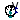
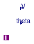

Package with sensor models for three-phase unbalanced AC systems
This package contains models that represent different types of three phases unbalanced AC/AC sensors.
Extends from Modelica.Icons.SensorsPackage (Icon for packages containing sensors).
| Name | Description |
|---|---|
| Package with example models | |
| Sensor for power, voltage and current (3 wire system, no neutral cable) | |
| Sensor for power, voltage and current (4 wire system, with neutral cable) | |
| Model of a probe that measures voltage magnitude and angle (Delta configuration) | |
|  ProbeWye | Model of a probe that measures voltage magnitude and angle (Wye configuration) |
| Model of a probe that measures voltage magnitude and angle (Wye configuration) witn neutral cable connection | |
| Package that contains base classes |
 Buildings.Electrical.AC.ThreePhasesUnbalanced.Sensors.GeneralizedSensor
Buildings.Electrical.AC.ThreePhasesUnbalanced.Sensors.GeneralizedSensor
Sensor for power, voltage and current (3 wire system, no neutral cable)

Ideal sensor that measures power, voltage and current in a three-phase unbalanced system without a neutral cable. The two components of the power S are the active and reactive power for each phase.
| Type | Name | Description |
|---|---|---|
| Terminal_n | terminal_n | Electrical connector side N |
| Terminal_p | terminal_p | Electrical connector side P |
| output RealOutput | V[3] | Voltage [V] |
| output RealOutput | I[3] | Current [A] |
| output RealOutput | S[3, terminal_n.phase[1].PhaseSystem.n] | Phase powers [W] |
Sensor for power, voltage and current (4 wire system, with neutral cable)

Ideal sensor that measures power, voltage and current in a three-phase unbalanced system with neutral cable. The two components of the power S are the active and reactive power for each phase.
| Type | Name | Description |
|---|---|---|
| Terminal4_n | terminal_n | Electrical connector side N |
| Terminal4_p | terminal_p | Electrical connector side P |
| output RealOutput | V[4] | Voltage [V] |
| output RealOutput | I[4] | Current [A] |
| output RealOutput | S[4, terminal_n.phase[1].PhaseSystem.n] | Phase powers [W] |
 Buildings.Electrical.AC.ThreePhasesUnbalanced.Sensors.ProbeDelta
Buildings.Electrical.AC.ThreePhasesUnbalanced.Sensors.ProbeDelta
Model of a probe that measures voltage magnitude and angle (Delta configuration)

This model represents a probe that measures the RMS voltage and the angle of the voltage phasors at a given point. The probes are connected in the Wye (Y) grounded configuration.
Extends from Buildings.Electrical.AC.ThreePhasesUnbalanced.Sensors.BaseClasses.GeneralizedProbe (Partial model of a generalized three-phase probe).
| Type | Name | Default | Description |
|---|---|---|---|
| Voltage | V_nominal | RMS Nominal voltage (V_nominal >= 0) [V] | |
| Boolean | perUnit | true | This flag display voltage in p.u. |
| Type | Name | Description |
|---|---|---|
| output RealOutput | V[3] | Voltage in per unit [1] |
| output RealOutput | theta[3] | Angle [rad] |
| Terminal_n | term | Electrical connector |
 Buildings.Electrical.AC.ThreePhasesUnbalanced.Sensors.ProbeWye
Buildings.Electrical.AC.ThreePhasesUnbalanced.Sensors.ProbeWye
Model of a probe that measures voltage magnitude and angle (Wye configuration)

This model represents a probe that measures the RMS voltage and the angle of the voltage phasors at a given point. The probes are connected in the Wye (Y) grounded configuration.
Extends from Buildings.Electrical.AC.ThreePhasesUnbalanced.Sensors.BaseClasses.GeneralizedProbe (Partial model of a generalized three-phase probe).
| Type | Name | Default | Description |
|---|---|---|---|
| Voltage | V_nominal | RMS Nominal voltage (V_nominal >= 0) [V] | |
| Boolean | perUnit | true | This flag display voltage in p.u. |
| Type | Name | Description |
|---|---|---|
| output RealOutput | V[3] | Voltage in per unit [1] |
| output RealOutput | theta[3] | Angle [rad] |
| Terminal_n | term | Electrical connector |
Model of a probe that measures voltage magnitude and angle (Wye configuration) witn neutral cable connection

This model represents a probe that measures the RMS voltage and the angle of the voltage phasors at a given point. The probes are connected in the Wye (Y) grounded configuration.
Extends from Buildings.Electrical.AC.ThreePhasesUnbalanced.Sensors.BaseClasses.GeneralizedProbe (Partial model of a generalized three-phase probe).
| Type | Name | Default | Description |
|---|---|---|---|
| Voltage | V_nominal | RMS Nominal voltage (V_nominal >= 0) [V] | |
| Boolean | perUnit | true | This flag display voltage in p.u. |
| Type | Name | Description |
|---|---|---|
| output RealOutput | V[3] | Voltage in per unit [1] |
| output RealOutput | theta[3] | Angle [rad] |
| Terminal4_n | term | Electrical connector |